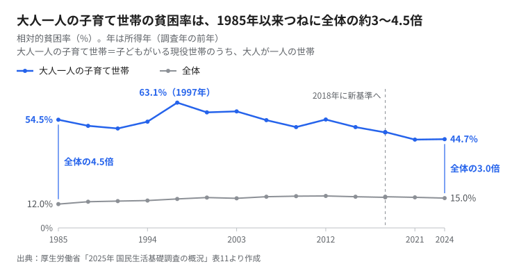
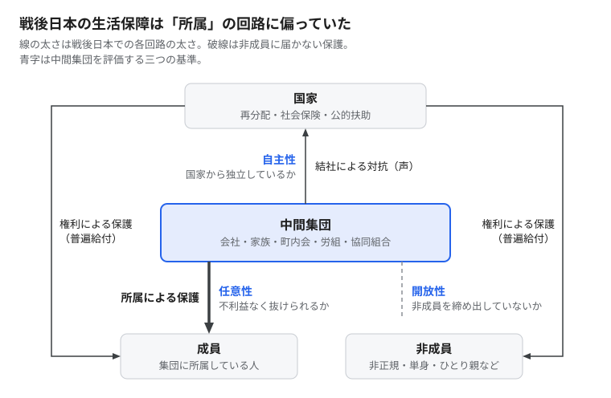

中間団体は誰を守ったのか――日本の貧困と「自主性」をめぐる試論
はじめに
日本の貧困の背景には、中間団体の衰退がある。労働組合も、町内会も、会社という共同体も、かつてのようには人を支えなくなった。この直観は多くの人に共有されているし、筆者もそこから考え始めた。
しかし本稿は、この直観を半分だけ正しいと考える。問題は、中間団体の「量」が減ったことそのものではない。日本の中間団体が国家から自立した集団ではなかったこと、成員以外を締め出す集団でもあったこと、そして戦後日本が生活保障をそうした集団に委ねてきたことにある。
以下では、モンテスキュー、デュルケーム、丸山眞男、柄谷行人の中間団体論をたどり直し、そのうえで貧困のデータと突き合わせて仮説を組み替える。今後の実証に向けた見取り図を示す試論である。
一 中間権力の両義性――モンテスキューと革命
モンテスキューは『法の精神』（1748年）で、君主制の本質を「中間的な諸権力」に見た。君主に従属しながらも、君主とは別の根拠をもつ勢力である。貴族、聖職者、法の保管所としての高等法院、そして都市の特権がそれにあたる。要点は次の格率に尽きる。「君主なくして貴族なく、貴族なくして君主なし。さもなくば、いるのは専制君主である」（第2編第4章、拙訳）。
ここで押さえておくべきことが二つある。第一に、これらの勢力が専制への歯止めになりえたのは、その権威が君主に由来しなかったからである。血統、教会、法の伝統という、王が与えたのではない根拠をもっていた。第二に、それは身分的な特権そのものであり、個人の側から見れば抑圧でもあった。
だからフランス革命は中間団体を一掃した。ルソーは『社会契約論』（1762年）で、一般意志が正しく表明されるには国家のなかに部分的な結社がないことが望ましく、あるならば数を多くして力を均等にすべきだと述べた。1791年のル・シャプリエ法は、同職団体の結成や労働者の団結まで禁じた。だが旧勢力を一掃した革命政権は、ロベスピエールの独裁に行き着く。そこでモンテスキューの議論は、貴族の擁護論から専制批判の理論へと読み直されていった（柄谷「解説」）。
この両義性は、日本の議論にもそのまま現れる。憲法学者の樋口陽一は、身分的な中間団体を壊して個人を国家と直接向き合わせたフランス革命型の意義を、その代償も含めて日本は引き受け直すべきだと論じた（樋口 1994）。中間団体を専制への防壁と見るか、個人を縛る装置と見るかで、処方箋は正反対になる。
二 デュルケームの調停と、その影
十九世紀末のデュルケームは、この対立を制度によって調停しようとした。『社会分業論』第2版（1902年）の序文で、彼は経済生活の無規制、つまりアノミーへの処方として、職業集団の再建を提案する。国家と個人のあいだに、個人を引きつけて社会生活へと結びつける二次的な集団の層が必要だ、というのである。
ただしデュルケームは国家を敵視しなかった。『社会学講義』では、家族や地域や同業の集団の拘束から個人を解放してきたのは、むしろ国家だと論じる。他方で、二次的な集団がなければ国家は個人を押しつぶす。個人の自由は、国家と中間集団が互いを牽制する緊張のなかで生まれる。これがデュルケームの図式である。
問題は、この図式が国家主導のコーポラティズムへ容易に読み替えられることにある。戦時日本の隣組や産業報国会は、中間集団が国家の動員装置へ転化した典型だった。戦後についても、政治学者のペンペルと恒川恵市は、経営や農業の団体が国家と緊密に結びつく一方で、労働が全国レベルの政策決定から締め出された日本の体制を「労働なきコーポラティズム」と呼んだ（Pempel and Tsunekawa 1979）。中間集団は、それだけでは専制の防壁にならない。国家の手足にもなりうる。
三 丸山眞男――問われるのは「中間」ではなく「自主」
丸山眞男がこの議論に持ち込んだ決定的な基準は、「自主性」である。集団が国家と個人のあいだに位置するだけでは足りない。国家に作られたのではなく、権力から独立しているかどうかが問われる。
丸山は「思想と政治」で、ヨーロッパの教会を自主的集団の模範として挙げる。教会は国家の外に立って教育を担い、各国で国家と教育権を争った。これに対して日本では、徳川期の寺院がすでに統治の下部機構に組み込まれていた。だから明治国家は、ほとんど抵抗を受けずに教育を手にできた。村に残っていたわずかな自治も、町村制によって官治行政の末端に吸収された。国家に対抗する集団を欠いたまま進んだこの過程を、丸山は「自由なき平等化」と呼ぶ（丸山「思想と政治」）。
『日本の思想』（1961年）でも丸山は、明治国家の急速な集権化を可能にした条件の一つとして、自前の特権に支えられた中間勢力の抵抗が脆かったことを挙げている。貴族の強固な伝統、自治都市、特権をもつギルド、国家の介入を拒む寺院といった、権力に対する社会の防壁が、日本ではもともと弱かったのである（丸山 1961）。
丸山はさらに英文論文「個人析出のさまざまなパターン」で、近代化のなかで伝統的な共同体から析出される個人を四つの型に分けた（Maruyama 1965）。結社をつくる方向に向かうか否か、政治的権威に向かうか離れるかの二軸から、自立化・民主化・私化・原子化の四類型が得られる。丸山の診断では、近代日本では私化と原子化が早くから、しかも優勢に現れた。原子化した個人は、ふだんは公共の事柄に無関心でありながら、孤独と不安から一転して熱狂的な参加へ振れやすい。強い指導者や、国民共同体のような永続する全体へ身を投じやすいのである。
四 柄谷行人――結社が個人をつくる
柄谷行人は、この丸山を「アソシエーショニスト」として読み直した（柄谷 2006）。柄谷によれば、自立した個人は結社に先立って存在するのではない。協同組合や労働組合のような自主的な集団に身を置くことで、国家に対しても揺るがない個人がはじめて形づくられる。
柄谷はさらに、明治以後の特徴を徳川期にまで遡らせる。堺のような都市や加賀の農民自治と結びついていた一向宗が、織豊政権から徳川体制にかけて制圧された。そのことで、自律的な結社を支える信仰上の拠り所そのものが失われた、と見るのである。そして、自発的な結社からなる「社会」の層を欠いた場所では、資本主義への反発は社会の自己組織化ではなく国家主義へ流れる、と柄谷は指摘する。貧困への怒りがどこへ向かうかを考えるうえで、これは決定的な論点である。
ここで補っておきたいことがある。日本の中間集団が「弱い」というのは、国家に対して弱いという意味であって、成員に対して弱いという意味ではない。柄谷が紹介する宮崎学の議論によれば、日本で人を拘束しているのは国家の法でも団体固有の掟でもなく、「世間」や「空気」と呼ばれる輪郭のない規範である（柄谷「解説」）。内藤朝雄が学校のいじめ研究から「中間集団全体主義」という概念を立てたのも、同じ事態の裏面だろう（内藤 2009）。日本の中間集団は、内には強圧的で、外の国家には従属的だった。専制も防がず、個人も解放しない、もっとも悪い組み合わせである。
柄谷の議論には批判もある。社会学者の宮台真司は、柄谷の立場を「国家なき中間集団主義」と呼んで揶揄的に退けた（宮台・宮崎 2004）。この批判は、国家を前提に中間集団を位置づけるデュルケーム的な立場からの異議として読むことができる。実際、柄谷が2000年に立ち上げた運動体NAM（New Associationist Movement）は、2003年に解散している。この対立には、本稿の終わりで立ち戻る。
五 戦後日本の生活保障――「所属による保護」
この視角から戦後日本の生活保障を見ると、構図ははっきりする。国家は直接の再分配を薄く保ち、生活保障を三つの回路に委ねた。会社（終身雇用・年功賃金・企業福祉）、家族（男性稼ぎ主モデル）、そして自民党の利益誘導（公共事業・農協・中小企業保護）である。政治学者のエステベス＝アベは、これらを福祉の「機能的等価物」と呼んでいる（Estévez-Abe 2008）。
1979年の「日本型福祉社会」論は、家族と地域を福祉の担い手として明示的に位置づけた。柄谷の交換様式の言葉でいえば、国家（B）が再分配の多くを、市場（C）に埋め込まれた互酬（A）的な擬似共同体に下請けさせた体制である。本稿はこれを「所属による保護」と呼ぶ。
この体制の解体は、脱工業化や高齢化といった構造変化だけによるものではない。意図された政治でもあった。国鉄分割民営化を断行した中曽根康弘自身が後年、国労は総評の中核だったから崩壊させる必要があったと公言している（衆議院 2006）。総評は1989年に解散した。
数字も「所属」の縮小を示している。
- 非正規雇用者は、1984年の604万人（雇用者の15.3%）から2024年の2,126万人（36.8%）へ増えた（厚生労働省 2025）。
- 労働組合の推定組織率は2025年に16.0%となり、1947年の調査開始以来の最低を記録した（JILPT 2026a）。
- 単独世帯は、1986年の全世帯の18.2%から2025年の35.4%へほぼ倍増した。65歳以上で子と同居する人の割合は、同じ期間に64.3%から32.2%へ半減している（厚生労働省 2026a）。
湯浅誠が『反貧困』（2008年）で描いた「溜め」の喪失は、所属による緩衝材を一挙に失う過程として読める。
六 仮説に不利な五つの事実
ここまでの議論は、「中間団体の衰退が貧困を生んだ」という直観を支持する。しかし次の五つの事実は、この直観をそのままの形で主張することを難しくする。
第一に、中間団体が強かった時代も、その外にいた人は守られていなかった。 子どもがいる現役世帯のうち大人が一人の世帯の貧困率は、1985年の時点ですでに5割を超えていた（図1）。会社と家族が生活保障を担っていたとされる時代に、母子世帯を中心とするこれらの世帯は、いまより高い貧困にさらされていたのである。


1985年から2012年にかけての貧困率の上昇も、保護の「質」が劣化したというより、保護の外へ落ちる人の「割合」が増えた構成効果として見るほうがデータに合う。しかも貧困率は世帯単位で測られるため、世帯のなかで経済的に従属していた女性の貧困は、もともと見えにくい。
第二に、2012年以降の貧困率の低下は、組合組織率がほぼ一貫して下がるなかで起きている。 少なくとも、中間団体の再建によるものではない。相対的貧困率は所得の中央値にも連動するから、デフレと賃金停滞というマクロの問題を、制度の議論だけで説明することもできない。
第三に、日本の中間団体は排他的だった。 企業別組合は正社員男性という内部者を守り、非正規雇用の拡大を受け入れる側に回ることが多かった。柄谷自身、2011年のインタビューで、東京電力の労働組合が原発を支持していたことに触れ、いまのデモを担うのは既成の組織ではなく個人が寄り集まった結社だと述べている（柄谷 2011）。残っていた中間団体は、資本と国家の側に組み込まれていた。その「衰退」の一部は、樋口が言う意味での解放でもあった。
第四に、国際比較が単純な図式に合わない。 2021年の相対的貧困率は、日本15.4%、アメリカ15.2%、イタリア12.8%、デンマーク6.3%である（JILPT 2026b）。家族や地域の紐帯が強いとされる南欧は、低貧困の国ではない。貧困が低いのは、組合組織率の高い北欧のように、組織された集団が国家に普遍的な再分配を迫ってきた国である。いわゆる権力資源論の知見である（Korpi 1983; Esping-Andersen 1990）。効いているのは中間団体の有無ではなく、それが国家に対してどこに立つかだ。
第五に、中間団体の「復興」は国家の撤退の口実にもなる。 「日本型福祉社会」から「自助・共助・公助」まで、共助の称揚は公助の縮小とセットで語られてきた。こども食堂は2025年度に全国1万2,601か所に達した（むすびえ 2025）。全国の支援団体はこれを住民自治の実践と位置づける一方で、政府の事業による後押しも受けている。こども食堂が自主的な結社として育つのか、撤退する国家の下請けになるのか。その分岐は、すでに目の前にある。
七 再定式化――三つの回路と三つの基準
以上を踏まえ、本稿は仮説を次のように組み替える。日本の貧困は「中間団体の衰退」そのものではなく、次の三つの重なりとして説明される（図2）。
- 「所属による保護」の縮小：国家からの自主性を欠いた擬似共同体が担ってきた保護の適用範囲が縮んだ。
- 「権利による保護」の未整備：それを代替する普遍的な給付と社会保険が整わなかった。
- 「結社による対抗」の不在：新たな貧困層を代表し、国家に要求を突きつける自主的で開放的な結社が育たなかった。


中間集団そのものは、三つの境界で評価されるべきである。国家に対する「自主性」、成員に対する「任意性」（不利益なく抜けられるか）、非成員に対する「開放性」（外の人を締め出していないか）である。それぞれ、丸山の自主的集団論、内藤の中間集団全体主義論、企業別組合による内部者保護への批判に対応している。
八 試論から検証へ
この再定式化は、まだ仮説にすぎない。今後、次の三点を確かめたい。
- 貧困率の上昇は、構成効果でどこまで説明できるか。 保護の外にいる世帯類型の増加が、貧困率の上昇をどれだけ説明するかを分解する。阿部彩の「貧困統計ホームページ」が公開する属性別の貧困率が手がかりになる（阿部 2024）。ただし、人口構成の変化が格差拡大の多くを説明するという議論は、大竹文雄『日本の不平等』（2005年）以来よく知られている。新しさは数字そのものより、それを「所属」の観点から読み直す点にある。
- 結社は「声」の回路として働くか。 結社への所属は、低所得層の不満を再分配の要求へ向けるのか。所属を欠く層では、不満が排外的な志向へ向かいやすいのか。世界価値観調査（WVS）の日本データには、労働組合や自助グループへの所属と、仕事が少ないときは自国民を優先すべきかを問う項目がある。
- 所属の「質」は測れるか。 公開データで分かるのは所属の種類だけで、自主性・任意性・開放性は測れない。ここは独自の調査で確かめるほかない。それができてはじめて、本稿の再定式化は検証可能な主張になる。
査読を経ない場で書く以上、分析に入る前に仮説と分析計画を公開しておくことが、論証の誠実さを担保するだろう。
おわりに――空気の専制と結社
理論上の評価も明言しておく。貧困の削減という一点に限れば、実証的に分があるのは、国家と中間集団の相互牽制を説くデュルケームのほうである。国家の揚棄を目指す柄谷のアソシエーショニズムではない。柄谷にとって交換様式Dはカント的な統整的理念であり、制度の設計図ではないからだ。
それでも柄谷の診断は鋭い。2006年の時点で彼は、結社の伝統が弱い社会ではネット空間がつながりよりも匿名の孤立を増やし、匿名性のもとで噴き出す欲望が政治と結びつくと、他者を排除する運動になりやすいと書いていた（柄谷 2006）。2011年には、自分たちで動かず代行者を待つ態度は、結局は人気取りの扇動政治家への委任に行き着くとも述べている（柄谷 2011）。
モンテスキューのいう専制は、現代の日本では一人の専制君主としてではなく、世論と空気の専制として現れる。原子化した貧困層の不満は、再分配の要求よりも、国民という想像の共同体への同一化に吸い寄せられやすい。
だから本稿の立場は、デュルケーム的な制度設計を、丸山と柄谷の「自主性」の基準で監視するという二重のものになる。普遍的な給付と職能・地域の集団を組み合わせながら、その集団が国家の下請けに転じていないか、成員を縛っていないか、外の人を締め出していないかを問い続けること。中間団体は誰を守ったのか。この問いは、これから誰を守るのかという問いでもある。
文献とデータ出典
文献
- Durkheim, Émile（1902）De la division du travail social, 2e éd., préface（邦訳『社会分業論』田原音和訳）
- Durkheim, Émile（1950）Leçons de sociologie（邦訳『社会学講義』宮島喬・川喜多喬訳、みすず書房）
- Esping-Andersen, Gøsta（1990）The Three Worlds of Welfare Capitalism, Polity Press
- Estévez-Abe, Margarita（2008）Welfare and Capitalism in Postwar Japan, Cambridge University Press
- 樋口陽一（1994）『近代国民国家の憲法構造』東京大学出版会
- 柄谷行人（2006）「丸山真男とアソシエーショニズム」『思想』988号
- 柄谷行人（2011）「反原発デモが日本を変える」『週刊読書人』2011年6月17日号
- 柄谷行人「解説」、宮崎学『法と掟と』角川文庫
- Korpi, Walter（1983）The Democratic Class Struggle, Routledge & Kegan Paul
- 丸山眞男（1961）『日本の思想』岩波新書
- 丸山眞男「思想と政治」『丸山眞男集』第7巻、岩波書店
- Maruyama, Masao（1965）"Patterns of Individuation and the Case of Japan: A Conceptual Scheme," in M. B. Jansen ed., Changing Japanese Attitudes Toward Modernization, Princeton University Press（邦訳「個人析出のさまざまなパターン」『丸山眞男集』第9巻）
- 宮台真司・宮崎哲弥（2004）『M2 われらの時代に』朝日文庫
- モンテスキュー（1748）『法の精神』第2編第4章
- 内藤朝雄（2009）『いじめの構造』講談社現代新書
- 大竹文雄（2005）『日本の不平等』日本経済新聞社
- Pempel, T. J. and Keiichi Tsunekawa（1979）"Corporatism without Labor? The Japanese Anomaly," in P. Schmitter and G. Lehmbruch eds., Trends toward Corporatist Intermediation, Sage
- ルソー（1762）『社会契約論』第2編第3章
- 湯浅誠（2008）『反貧困――「すべり台社会」からの脱出』岩波新書
データ出典
- 阿部彩（2024）「相対的貧困率の動向（2022調査update）」貧困統計ホームページ
- 厚生労働省（2025）「パートタイム・有期雇用労働法及び労働者派遣法の施行状況等について」
- 厚生労働省（2026a）「2025年 国民生活基礎調査の概況 Ⅰ 世帯数と世帯人員の状況」
- 厚生労働省（2026b）「2025年 国民生活基礎調査の概況 Ⅱ 各種世帯の所得等の状況」
- JILPT（2026a）「推定組織率は16.0%で4年続けて過去最低水準」『ビジネス・レーバー・トレンド』2026年3月号
- JILPT（2026b）「データブック国際労働比較2026 第5-16表 相対的貧困率」
- むすびえ（2025）「2025年度こども食堂全国調査 総括」
- 衆議院（2006）「中曽根康弘元総理大臣の国鉄労働組合についての発言に関する質問主意書」
- World Values Survey Association「Conditions of Use」